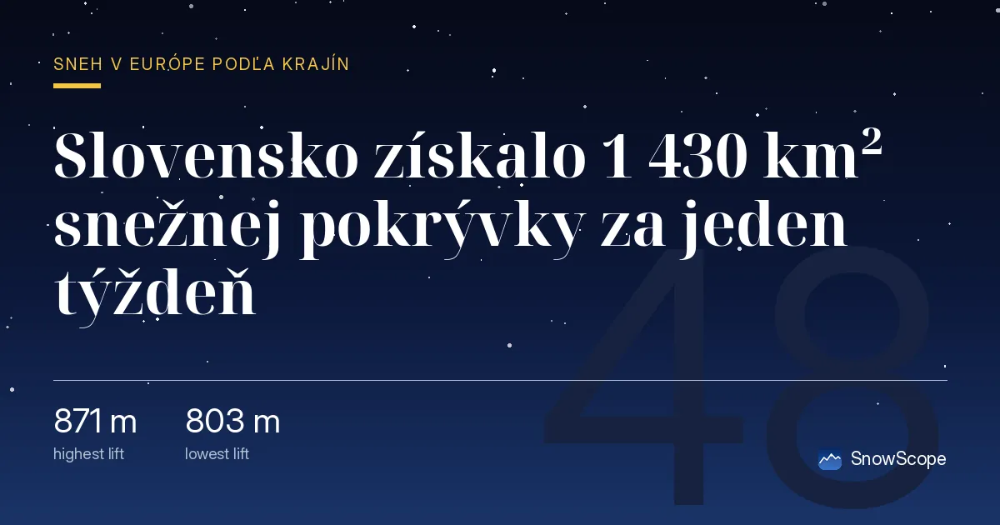
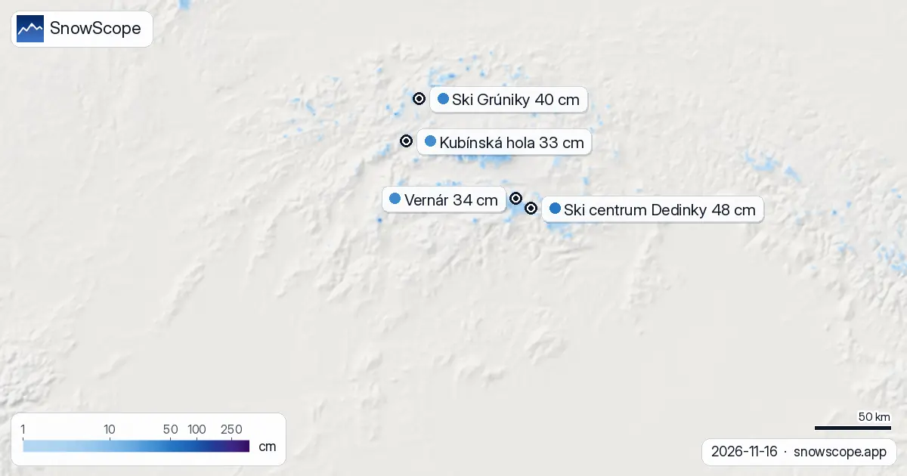

Slovensko získalo 1 430 km² snežnej pokrývky za jeden týždeň
Za pouhých sedem dní si Slovensko vrátilo takmer 1 430 km² bieleho terénu – podstatný skok oproti riednnej pokrývke z minulého týždňa. Sneh teraz pokrýva 11 percent modelovaného lyžiarskeho terénu krajiny, s najväčšou akumuláciou už fixovanou nad 1 500 m v Vysokých Tatrách.
Pozrite si predpoveď snehu pre Ski centrum Dedinky v aplikácii SnowScopeVýška snehu, upozornenia a 3D mapa, zadarmo.
Týždeň zotavenia
Pred týždňom nosilo merateľný sneh len 590 km² Slovenska. Dnes sa toto číslo vyšplhalo na 2 020 km². Zmena znamená zlomový bod v sezóne, ktorá sa začala opatrne. Začiatok novembra priniesol roztrúsené škvrnky vo vysokej nadmorskej výške; do polovice novembra sa obrázok prehĺbil.
Čo sa zmenilo? Nadmorská výška urobila rozdiel. Terén nad 1 500 m teraz nosí nepretržitú bielu pokrývku – 98 percent pokrytia v pásme 1 500–2 000 m, stúpajúc na 100 percent nad 2 000 m. Priemerná hĺbka v týchto výškach (7 cm a 13 cm) odráža stálu akumuláciu skôr ako spektakulárne búrky. Pod 1 500 m zvyšuje obrázok roztrúsený: len 40 percent terénu medzi 1 000 a 1 500 m drží sneh a nižšie svahy ostávajú väčšinou holé.
| Stredisko | Výška snehu | Nový sneh, 72 h | Ďalšie dni | Vrchol |
|---|---|---|---|---|
| Ski centrum Dedinky | 48 cm | 1 cm | 0 cm | 871 m |
| Ski Grúniky | 40 cm | 0 cm | 1 cm | 973 m |
| Vernár | 34 cm | 1 cm | 0 cm | 1 001 m |
| Kubínská hola | 33 cm | 0 cm | 3 cm | 1 390 m |
| Ski Zábava Hruštín | 33 cm | 0 cm | 3 cm | 1 141 m |

Včerajší úbytok a čo to znamená
Medzi včerajškom a dnes Slovensko stratilo 1 070 km² meranej snežnej pokrývky. Tento úbytok nastal, keď ľahší sneh v strednej nadmorskej výške tál alebo sa konsolidoval. Modelovaná snežná pokrývka poklesla z 3 090 km² na 2 020 km². Nezamieňajte si tento denný výkyv za zmenu trendu: týždenná trajektória zostáva vzostupná a sneh vo vyšších nadmorských výškach – kde sa jazdí – bol stabilný.
Sneh v ranej sezóne je tenký a reaktívny na malé zmeny teploty. Mierne obdobie môže zmazať roztrúsené škvrnky; chladná noc ich obnoví. Včerajšný úbytok bol regionálny a väčšinou obmedzený na nižšie svahy. Vysoké Tatry, naša najspoľahlivejšia štartovacia zóna, zvyšujú výnimku: 3 cm čerstvého snehu za posledných 72 hodín posilnili pokrývku nad 1 500 m.
Kde sa sneh nachádza teraz
Ski centrum Dedinky, na 871 m, drží 48 cm a vedie v rebríčku slovenských stredísk. Táto nadmerna hĺbka odráža miestne podmienky a mierne nedávne zrážky skôr ako reprezentatívny priemer snehu. V tejto nadmorskej výške je sneh krehký; skaly sa môžu vyskytnúť pod tenkou pokrývkou. Nasledujúce tri dni by mali priniesť tam málo nového snehu.
Vyššie strediská rozpovedajú inú históriu. Kubínská hola a Ski Zábava Hruštín, obe nad 1 100 m, držia po 33 cm a budú získavať 3 cm počas nasledujúcich troch dní. Hranica snehu sa teraz nachádza na 1 200 m, čo znamená, že terén nad touto hranicou sa buduje a pretrvá, zatiaľ čo nižšie svahy zostávajú kompromitované. Vernár, Ski Grúniky a medziľahlé lokality držia medzi 34 a 40 cm – skromne podľa noriem polovice zimy, ale rešpektabilne na polovicu novembra.
Pásmová štruktúra: schody hĺbky
Sneh Slovenska je vertikálne zoradený. Medzi 500 a 1 000 m pouze 5 percent mapovanej plochy drží sneh; priemerná hĺbka je nula. Skôčte na 1 000–1 500 m a pokrytie stúpne na 40 percent s priemernou hĺbkou 1 cm. Skutočný posun nastane nad 1 500 m: 98 percent terénu v pásme 1 500–2 000 m drží 7 cm a pásmo nad 2 000 m je úplne biele s priemernou hĺbkou 13 cm.
Tento rebrík odráža fyziku ranej sezóny: studený vzduch sa usadí nad vysokou krajinou; nižší terén sa kýva nad a pod bodom tuhnutia. Pre lyžiarov je správa jasná: hľadajte nadmorskú výšku. Běhy vo vysokej nadmorskej výške ponúkajú nepretržitý sneh; terén v stredných horách je v počiatkoch; nižšie svahy ostávajú lotériou holých škvrnok a tenkej pokrývky.
Predpoveď: kritické štyri dni vpredu
Zajtra, 17. november, znamená najsnežnejší deň nasledujúceho týždňa. Náš model predpovedá 4 cm v celej mapovanej oblasti. Toto je prvý pomenovaný snežný deň v sezóne a bude sústredený nad 1 000 m. Nasledujúce tri dni prinesú marginálne zisky, s približne 8 cm kumulatívne do 19. novembra.
Keď sa pozrieme ďalej, druhý týždeň tohto predpovedného obdobia (24.–30. november) ukazuje podstatne vyššiu aktivitu: 31 cm modelovaných v vrcholových dňoch. Tento výhľad naznačuje, že prechodné obdobie sa končí a sezóna sa buduje smerom k podstatnejšej pokrývke. Zatiaľ čo táto vzájomnosť zostáva obdobím konsolidácie – nie výdajom, ale stabilným vzostupom v hĺbke závislej od nadmorskej výšky.
Kontext: regionálny obrázok
Poľské Tatry v susednosti majú podobné podmienky ranej sezóny s 11 percent bielou pokrývkou a vedením 45 cm v Orlskie Záhoří; 15 cm sa predpovedá na nasledujúci týždeň. Česká republika zaostáva ďaleko vzadu s 3 percent pokrytím a 8 cm očakávanými počas siedmich dní. Slovensko sa nachádza v strede regionálneho spektra – nie v vedení, ale konsoliduje sa rýchlejšie ako nižšie položený český terén a zodpovedá Poľsku tempom v horách.
Z 107 mapovaných stredísk Slovenska je len 42 súčasne pokryté snehom. Táto vzácna distribúcia zdôrazňuje, aký selektívny a od nadmorskej výšky závislý zvyšuje snežná sezóna. Biely podiel 11 percent, hoci nízky na úrovni februára, predstavuje významný nočný skok a platnú základňu na vysokohorské lyžovanie nad 1 500 m.
Tipy pre lyžiarov
- Zamerajte sa na terén nad 1 500 m, kde hĺbka snehu dosahuje 7–13 cm a pokrytie je nepretržité. Nižšie svahy zostávajú roztrúsené napriek hláseným hĺbkam na jednotlivých strediskách.
- Očakávajte 4 cm zajtra (17. november), sústredený nad 1 000 m. Podmienky sa budú postupne zlepšovať, ale sneh v ranej sezóne zostáva tenký; skúmajte sjazdy na skaly alebo holé miesta pod povrchom.
- Pozorne sledujte predpoveď: teplé obdobie by mohlo tenčiť pokrývku v strednej nadmorskej výške, ale sneh vo vysokých nadmorských výškach je teraz fixovaný a stabilný nad 1 500 m.
- Ak jazdíte pod 1 200 m (aktuálna hranica snehu), overte si miestne podmienky a očakávajte variabilné pokrytie. Vyššie strediská ako Kubínská hola ponúkajú konzistentnejší terén.
- Pred vstupom do voľného terénu konzultujte úradnú lavínovú predpoveď pre Slovensko. Sneh v ranej sezóne sa väzuje nerovnomerne a tenká pokrývka nad zmrazenou pôdou môže ukrývať nebezpečenstvá.
About these numbers
Resort snow depths are the deepest snow on the resort's upper slopes from the SnowScope snow model (about 1 km, run of 16. novembra); they are estimates for an area, not a measurement at one point. Station values are measurements on the date shown. Forecasts can change. Always read the official avalanche bulletin before going off-piste.
Cite this report
For research, teaching or the press: the numbers and charts are free to reuse under CC BY 4.0 with this citation.
SnowScope (2026), Slovensko získalo 1 430 km² snežnej pokrývky za jeden týždeň, https://snowscope.app/blog/sk/2026/11/slovakia-snow-report-16-november-2026.html, accessed 2026-11-16
SnowScope (Atlas Labs). (2026, November 16). Slovensko získalo 1 430 km² snežnej pokrývky za jeden týždeň. SnowScope snow reports. https://snowscope.app/blog/sk/2026/11/slovakia-snow-report-16-november-2026.html
BibTeX
@misc{snowscope2026slovakiasnowreport16nove,
author = {{SnowScope (Atlas Labs)}},
title = {Slovensko získalo 1 430 km² snežnej pokrývky za jeden týždeň},
year = {2026},
month = nov,
howpublished = {\url{https://snowscope.app/blog/sk/2026/11/slovakia-snow-report-16-november-2026.html}},
note = {Published 2026-11-16 20:42 UTC; accessed 2026-11-16}
}· CC BY 4.0 · Methods, data and tools →
Ski centrum Dedinky: snow and temperature by height, this winter vs last (tools) →
Follow Ski centrum Dedinky
Zadarmo: správa, keď prichádza nový sneh, a predpoveď každé ráno.